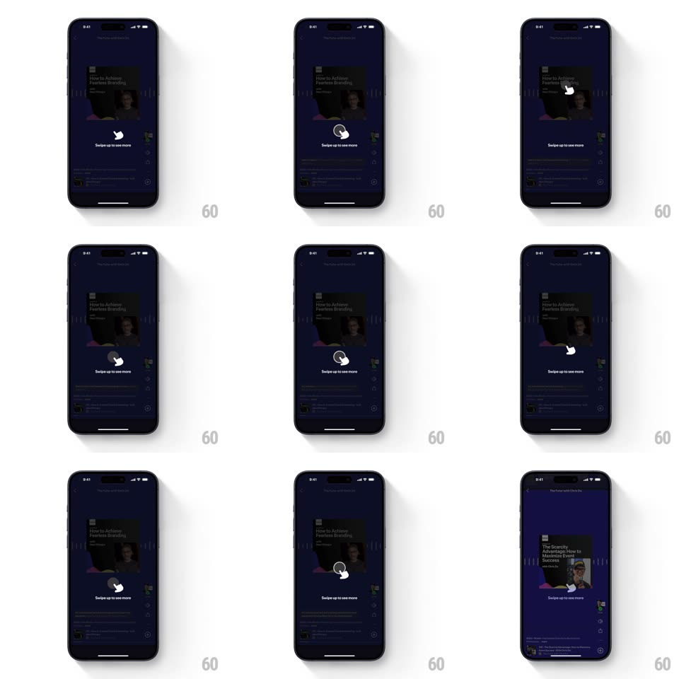

Media
Frame-by-frame

Rebuild this interaction 1:1: Spotify's swipe-up onboarding tooltip - the episode page dims and a centered tooltip with an animated hand-drag glyph and "Swipe up to see more" teaches the upward swipe, looping until dismissed.

Rebuild this interaction 1:1: Spotify's swipe-up onboarding tooltip - the episode page dims and a centered tooltip with an animated hand-drag glyph and "Swipe up to see more" teaches the upward swipe, looping until dismissed.
## Integration
Integration: stack-agnostic spec - springs given as stiffness/damping, timed motions as duration + curve; map every value to your framework and animation library of choice.
## Scene
The dark Spotify episode page ("How to Achieve Fearless Branding", The Futur with Chris Do) with artwork and action rail. The onboarding overlay darkens the whole page (scrim ~60% black) and centers a tooltip: a hand glyph over a touch ring and the label "Swipe up to see more".
## Motion spec
Pattern: looping gesture-coach overlay.
- Enter: the scrim fades in (250ms) and the tooltip scales in from 0.9 with a spring (~380/20, 350ms).
- The hand glyph performs the gesture loop: touch ring pulses at the hand's contact point (scale 1 -> 1.4, opacity 1 -> 0, 500ms), then the hand drags upward ~40pt (600ms, ease-out) with the label following; brief hold, fade back to start, repeat every ~2s.
- An actual swipe up anywhere dismisses the overlay: scrim fades (200ms), tooltip slides up and out (250ms, ease-in) - matching the taught gesture direction.
- Tapping the scrim dismisses with a simple fade instead.
## Calibration
- The drag distance is short and the pace slow - it reads as instruction, not animation.
- Show once per user; never block content behind it for more than one loop.
## Reduced motion
Tooltip appears statically with the hand at its end position and no loop.
## Don't miss
- The touch ring pulse fires exactly when the hand "lands", selling the tap-then-drag reading.
- Dismissal direction matches the swipe - the UI leaves the way the gesture goes.